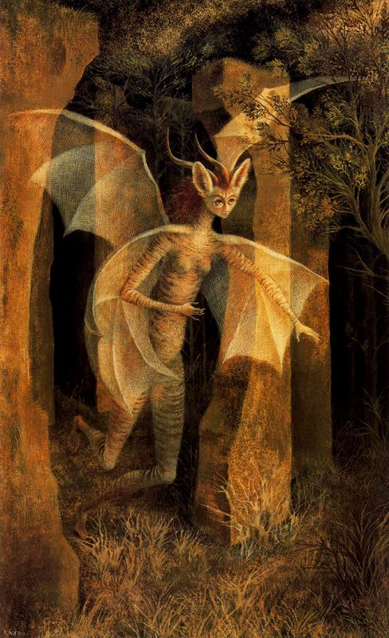

13 Чем ты будешь заниматься в нашем мире?
- Ты готова увидеть наш мир? Настоящий. Даже если он ужасный, в котором живут хищники, поедающие друг друга? Может, неведение лучше, спокойнее? - услышала я на пробуждении.
- Нет! Лучше знать, любой ценой. Как же я хочу прийти в тот заповедный мир! Я не могу иначе, поймите. Я люблю мир вокруг меня, но не могу ограничиться им. Я с детства видела то, что там, за гранью. Я мучилась от невозможности соприкоснуться с тем, что было в шаге от меня. Мне надо туда дойти. Всю жизнь я чувствовала боль и таинственную страсть, когда глядела на полную луну. Боль недоступности того, что совсем рядом. Знайте, я вас не предам, я готова пройти через многое, выполнить те самые задачи.
- Не предай себя.
В последнее время у меня началась разочарование. Мне показалось, и что меня вовсе не собираются брать в свой мир. Последние дни я тщетно ждала, что вот-вот случится чудо и меня возьмут в тот самый мир, далёкий запредельный дом. Но ничего не происходило, у меня наступило отчаяние. Подспудно я себя спрашивала - может, это всего лишь примитивная разводка, чтобы воровать чужую энергию? Не зря Эдик сказал, что они - вампиры.
- Вначале в нашем мире очень темно. Сразу мы тебе всё не покажем, лишь малую его часть. Ты должна заранее подумать, чем ты будешь заниматься в нашем мире.
- Какие есть варианты? Иначе как мне выбрать, если я ничего не знаю о вашем мире?
- В нашем мире существует много разнообразной деятельности, но она требует подготовки и часто длительного обучения.
- Я готова учиться! Ведь я же сразу вас попросила - хочу учиться у вас, стать такой, как вы.
- Но пока ты будешь обучаться, тебе придется заниматься не самой интересной деятельностью. Ты к этому готова?
- Это логично. В том мире, где я живу, все так же. И какая есть деятельность?
- Чистить одежду, примерять платья.
Я даже удивилась. Зачем мне в другом мире примерять какие-то платья?
- Допустим
- Но тебе это может не понравиться, поскольку это нужно делать в помещении, при искусственном свете, а ты любишь бродить по лесу.
- Поняла. Ещё чего можно делать?
- Готовить еду. Там есть ряд подготовительных этапов, не требующий квалификации. Но это тоже в помещении
- Это даже интереснее.
- Да, но там будут другие существа вместе с тобой. Ты - интроверт, тебе может быть сложно находиться все время в обществе.
- Мне это интересно, так я смогу быстрее выучить ваш язык.
- Не надо думать, что если тебе тяжело с людьми, в нашем мире этой проблемы не возникнет. Хоть мы и другие, но мы - тоже общество. Поначалу тебе будет любопытно, но потом ты, возможно, начнешь уставать от шумной компании и прятаться.
- Тем не менее, это интересный вариант. Он мне понравился больше предыдущего. Какие еще есть варианты?
- В наших лесах содержатся интересные вещи. Их можно находить, но для этого нужна сноровка и это тяжелая работа. Могут пригодиться определенные приспособления. Это сложнее, чем предыдущие две работы.
- Все равно это для меня самое интересное. Я готова учиться.
- Мы поняли. Пусть будет так. Когда ты окажешься у нас, тебе надо будет открыть глаза. Больше ничего не делать. Дальше тебе все скажут, слушай инструкции. За тобой придут, затем поведут к остальным. Те, кто за тобой придет, тебе ничего не расскажет. Когда будешь там, где мы все - все, что нужно, тебе расскажем.
Периодически я ловила себя на мысли, что далеко не всегда понимаю, о каком времени идет речь - о прошлом или будущем. Видимо, в их языке существуют какие-то иные грамматические категории, которые пока что мне не передаются телепатически.
По ночам меня мучили, показывая кошмары, либо полностью игнорировали. Иногда откровенно насмехались. После очередного разочарования от издеваетельств под утро сказала:
- Я была в корне не права, когда просила у вас сверхспособности и прочие плюшки. Мне ничего от вас не надо, кроме одного! Вы мне сказали, что ваш мир станет так же и моим. Я хочу в нем бывать и не просто бывать, как турист. Хочу жить с вами там на равных правах, но так же и отвечать вместе с вами за него, быть как и вы - хранителем мира. Пусть поначалу я буду учиться, буду вас слушаться, но потом - у меня будет право голоса! Если я буду не согласна, я буду спорить и доказывать свою правоту. Это будет НАШ мир. В котором мы будем жить и все делать вместе. Иначе катитесь к чертям собачим!
- Мы всегда будем вместе и выполним твоё желание. Тебе не нужны миры, где ты никому не нужна. Иные миры и иные возможности манят тебя, но то, что по-настоящему будоражит твою душу - это найти дорогу домой. Отныне ты не будешь чувствовать боль, глядя на полную луну.
- 